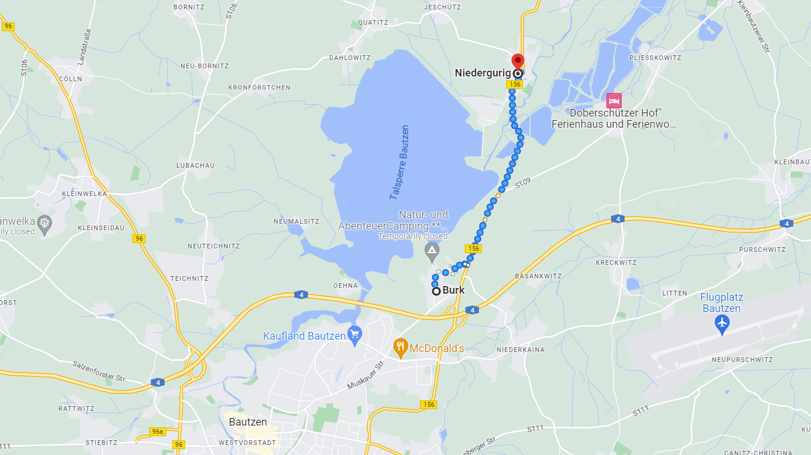
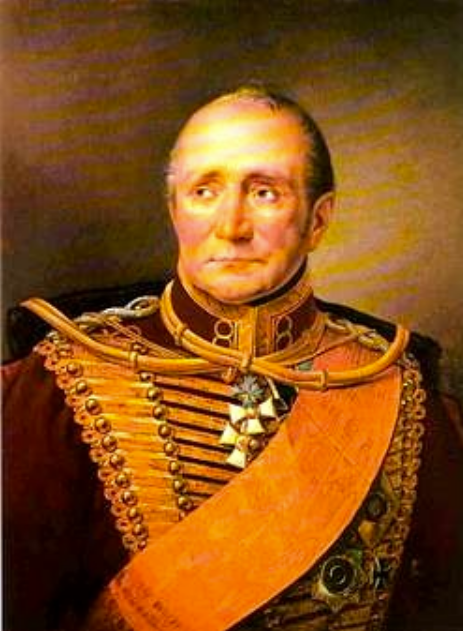
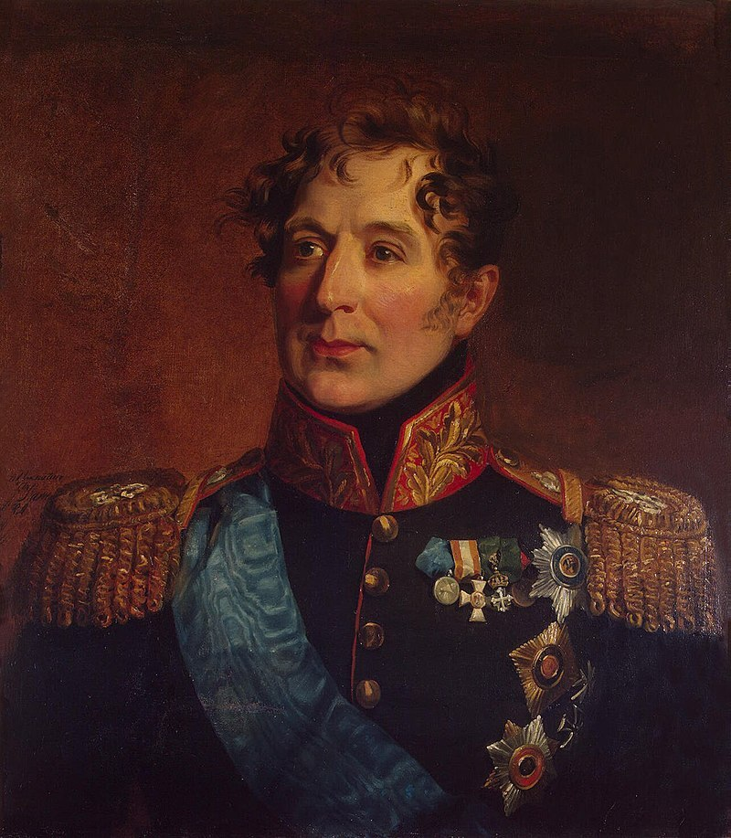

바우첸 전투 (2) - 프랑스군보다 더 미운 러시아군
게시: 2023-04-17T06:30:13+09:00
오후 1시 경에 쿼티츠(Quatitz)에 나타난 술트의 프랑스군은 이런저런 마을에 분산되어 있던 프로이센군을 쉽게 분쇄한 뒤, 니더구리쉬에 배치되어 있던 클라이스트의 작은 군단을 사정없이 몰아붙였습니다. 클라이스트는 천천히 밀려났지만 슈프레 강 건너 뵐라우와 키페른 등의 언덕들에서 쏘아대는 프로이센군의 포격 덕분에 3시간 동안이나 니더구리쉬 마을을 지킬 수 있었습니다. 프로이센군이 슈프레 강을 건너 후퇴한 뒤에도 프랑스군은 한참 동안 그 다리를 건너지 못했는데, 역시 강 건너 언덕에서 쏟아지는 치열한 포격 때문이었습니다. 이 병목은 강 좌안의 고틀롭(Gottlobs) 언덕을 프랑스군이 장악한 뒤 거기에 중포들을 방열하여 강 건너 뵐라우 언덕의 프로이센 포병대들을 제압한 후에야 해결되었습니다. 프랑스군 보병들은 떼를 지어 슈프레 강을 건넌 뒤 블뤼허의 임시 사령부가 위치한 키페른(Kiefern) 언덕 아래까지 도달했으나, 강을 건넌 뒤 숨을 고르고 있던 클라이스트의 기병대가 이들을 다시 강가로 일단 몰아냈습니다. 이후 니더구리쉬의 다리를 사이에 두고 프로이센군과 프랑스군은 오후 내내 치열한 싸움을 벌였습니다. 이러는 사이, 알렉산드르와 프리드리히 빌헬름이 초조한 비트겐슈타인과 함께 바로 그 키페른 언덕에 있는 블뤼허를 방문했습니다. 짜르와 국왕이 정말 최전선이라고 할 수 있는 이 곳을 찾은 이유는 블뤼허를 격려하는 차원도 있었지만 실은 그보다는 눈 앞에서 생생하게 벌어지는 전투 현장을 구경하려는 마음이 더 컸습니다. 키페른 언덕은 슈프레 강을 둘러싼 전체 전장이 훤히 내려다 보이는 곳이라 전투 구경하기엔 최적의 명당자리였거든요. 이렇게 짜르와 국왕은 들뜬 마음으로 키페른 언덕을 올랐지만 그들을 따라간 비트겐슈타인은 물론 블뤼허의 마음도 편치는 않았습니다. 일단 비트겐슈타인은 짜르가 보고 있는 자리니만큼 자신이 총사령관이고 자신이 전황을 장악하고 있다는 것을 드러내보이고 싶어했습니다. 그래서 비트겐슈타인은 블뤼허에게 병력 배치와 지형, 그에 따른 전술에 대해 이러쿵저러쿵 위엄있는 태도로 평가를 늘어놓았는데, 프로이센 장교들은 이를 전혀 달가와 하지 않았습니다. 최악의 순간은 비트겐슈타인이 블뤼허에게 다음과 같이 쓸데없는 격려사를 했을 때였습니다. "만약 장군께서 이 위치를 사수할 수 있다면, 내일의 전투의 승리는 우리 차지가 될 것이오." 이건 말하는 사람 입장에서는 별 생각 없이 키페른 언덕의 전술적 중요성에 대해 말한 것일 수 있으나, 듣는 사람 입장에서는 부당한 책임전가 또는 프로이센군에 대한 불신으로 들릴 수도 있는 말이었습니다. 블뤼허는 눈에 띄게 발끈하며 단호한 말투로 되받아쳤습니다. "약속하건대 오늘 난 이 곳을 사수할 것테니, 사령관께서는 내일 꼭 승리하시구려." 이렇게 갑자기 분위기가 싸해졌을 때 다행히도 프랑스군의 폭발탄 하나가 그들이 위치한 자리에서 얼마 떨어지지 않은 곳에서 폭발하는 바람에 일단 이 어색한 상황은 종료되었습니다. 그 폭발탄을 시작으로 프랑스군의 포격이 블뤼허의 사령부에도 날아들기 시작했습니다. 짜르와 프로이센 국왕도 구경 명당이 아닌 전쟁 한복판이 되어버린 키페른 언덕에서 더 버티는 것은 위험했기 때문에 서둘러 후방의 다른 언덕으로 대피해야 했습니다.

(클라이스트가 지키던 니더구리쉬(Niedergurig)와 바우첸 쪽에서 나타난 보네 사단이 공격한 부르크(Burk)의 위치입니다. 두 지점 사이의 거리는 불과 4km도 되지 않았습니다. 현대 지도에 보이는 저 넓은 호수는 당시엔 존재하지 않았던 인공 저수지입니다.) 한편, 슈프레 강 동편으로 밀려난 클라이스트의 부대는 여전히 치열하게 저항하며 니더구리쉬의 다리를 지켰으나 저녁 5시 무렵 전선 중앙 쪽에서 마르몽의 제6 군단 소속인 보네(Jean Pierre François Bonet)의 사단이 프로이센군의 좌익이라고 할 수 있는 부르크(Burk)를 공격하자 클라이스트의 저항은 위기에 몰렸습니다. 결국 저녁 7시 즈음해서 휴대한 탄약이 다 소진되자, 클라이스트는 더 버티지 못하고 동쪽으로 후퇴해야 했습니다. 클라이스트가 무너지면서 결국 니더구리쉬의 다리도 프랑스군의 손에 넘어갔지만, 키페른 등의 언덕에 진을 친 프로이센군은 물러서지 않았습니다. 결국 저녁 8시 반 즈음하여 어둠이 깔리자 양측은 차츰 사격을 중지하고 숨고르기에 들어갔고, 그 날의 전투는 그 위치 그대로 소강상태에 들어갔습니다. 이때 키페른 언덕을 지키던 지텐(Hans Ernst Karl, Graf von Zieten) 장군의 전선은 프랑스군의 진영에서 불과 180m 정도 떨어진 상태로 밤을 보냈습니다.

(지텐 장군입니다. 브란덴부르크, 즉 오리지널 진짜 프로이센 출신의 귀족인 그는 나폴레옹보다 1살 연하였습니다. 그는 나중에 백일천하 때의 전투인 리니(Ligny) 전투와 워털루 전투에도 참전했고, 그의 군단은 연합군 중 가장 먼저 파리에 입성하는 영광을 누렸습니다. 이후 백작, 즉 그라프(Graf)에 봉해진 그는 78세까지 장수했습니다.) 이렇게 5월 20일 밤까지의 전황을 놓고 보면, 중앙에서는 밀로라도비치가 바우첸 도심을 상실하고 후퇴했고, 우익에서는 클라이스트의 분전에도 불구하고 니더구리쉬 등의 슈프레 강변 마을들을 빼앗겼으나 전술적으로 매우 중요한 키페른 등의 슈프레 강변 언덕들은 여전히 블뤼허가 장악하고 있는 상태였습니다. 이 날 전반적인 연합군의 피해는 엄청난 수준은 아니었습니다. 아무래도 든든한 방어진에 의지하여 지키는 입장이었던 연합군의 피해가 더 적었을 텐데, 연합군은 중앙의 밀로라도비치가 약 800명의 사상자를 냈고, 우익의 클라이스트가 1,100의 사상자를 냈습니다. 프랑스군의 피해는 집계된 바는 없지만 그보다는 더 컸을 것이라고 추측되었습니다. 문제는 러시아군과 프로이센군의 각각의 전황과 사상자 수가 꽤 비교된다는 점이었습니다. 결과만 놓고 보면 중앙의 러시아군은 크게 밀려난 것에 비해 사상자 수가 더 적었고, 우익의 프로이센군은 상대적으로 전선을 잘 지킨 편인데 사상자 수도 더 많았습니다. 이건 가뜩이나 러시아군을 고깝게 보던 프로이센군에게 빌미를 주었습니다. 다음 날의 작전을 협의하기 위해 한밤중에 모인 연합군 수뇌부 회의에서, 그나이제나우는 클라이스트가 니더구리쉬의 다리를 지키지 못한 것도 결국 중앙의 바우첸을 맡은 러시아군이 '총 한 방 제대로 쏘지 않고 철수해버렸기 때문'이라며 러시아 측을 거세게 비난했습니다.

(이쯤해서는 잊으셨을 것 같으니, 밀로라도비치의 얼굴을 다시 한번 보고 가시겠습니다. 나폴레옹보다는 2살 연하였던 그는 러시아 태생이지만 원래 세르비아 귀족 가문 출신이었습니다. 그의 증조 할아버지가 러시아 표트르 1세의 사주를 받아 당시 세르비아를 지배하던 오스만 투르크에 저항하는 반란을 일으켰다가 결국 실패하고 러시아로 도주했기 때문에, 그는 세르비아 출신 러시아 귀족이 된 것이지요. 그는 어려서부터 군문에 들어갔고, 1805년 아우스테를리츠 전투 때는 나폴레옹이 함정으로 비워주었던 프라첸(Pratzen) 고지를 점거하고 포진했던 부대들 중 하나의 지휘관이기도 했습니다. 그래서 나이는 비록 비트겐슈타인보다 2살 더 어렸지만 군내의 경력과 계급은 비트겐슈타인보다 선임이었고, 그로 인해 밀로라도비치는 비트겐슈타인이 자신의 지휘권자라는 것에 대해 강한 반감을 가지고 있었습니다. 그는 나중에 상트 페체르부르그의 주지사를 맡는 등 잘 살았습니다만 일설에 따르면 그는 동성애자였다고도 합니다.)
프로이센군 입장에서는 꽤 합리적인 비난이었습니다. 수적으로 불리한 상황에서도 슈프레 강변의 언덕에 배치한 포병대를 이용하여 니더구리쉬의 다리를 잘 지켜내던 클라이스트가 결국 큰 피해를 입으며 후퇴해야 했던 이유가 바로 밀로라도비치가 지켜야 했던 바우첸 쪽에서 나타나 부르크를 공격했던 프랑스군이었기 때문이었습니다.
하지만 막도날과 우디노, 즉 프랑스군 중앙과 우익의 집중 공격을 한꺼번에 상대해야 했던 밀로라도비치의 입장에서는 부당한 비난에 불과했습니다. 밀로라도비치의 부대는 어디까지나 러시아군의 전위대에 불과했고, 실제로도 연합군의 주방어선은 바우첸 동쪽에 구축되어 있었습니다. 무엇보다, 전선이 너무나 길었기 때문에 밀로라도비치의 전위대는 연합군의 좌익에서 중앙에 이르는 긴 전선에 분산될 수 밖에 없었고, 프랑스군이 그 중 한 지점을 집중 공격할 경우 쉽게 무너질 수 밖에 없었습니다. 게다가 밀로라도비치가 물러선 것은, 비록 예상보다 너무 빨리 물러섰다는 점에서는 할 말이 옹색했지만, 애초에 미리 협의가 된 작전이었습니다. 어떻게 보면 우익에서 프로이센군이 쓸데없이(?) 너무 끈질기게 버티는 바람에 밀로라도비치의 계획된 후퇴가 상대적으로 우스운 모양새가 된 셈이었습니다.
이렇게 연합군 수뇌부의 한밤중 회의는 내일 어떻게 싸우느냐 보다는 오늘 낮에 왜 그 모양으로 싸웠는지에 대한 비난과 변명으로 시작되었습니다. 그러나 그게 진짜 문제는 아니었습니다. 자존심 강한 연합국 간의 합동 작전에는 이런 일이 비일비재한 것이 당연했고, 그 자리에 모인 수뇌부들의 역할은 그나이제나우처럼 젊고 혈기가 넘치는 장교들의 흥분을 가라앉히고 회의를 건설적인 방향으로 이끌어가는 것이었습니다. 그리고 무엇보다 전체적인 상황을 판단하고 향후 전략에 대해 결정을 내려야 했습니다. 가령 전날 연합군 수뇌부는 프랑스군의 공격이 연합군 좌익에 집중될 것으로 예상했으나 실제로는 프랑스군의 공세는 중앙과 우익에서 거셌습니다. 이런 상황에서 리더의 역할은 과연 누가 해낼 수 있었을까요? 거기서 연합군의 진짜 문제가 드러납니다.
Source : The Life of Napoleon Bonaparte, by William Milligan Sloane Napoleon and the Struggle for Germany, by Leggiere, Michael V
https://en.wikipedia.org/wiki/Hans_Ernst_Karl,_Graf_von_Zieten